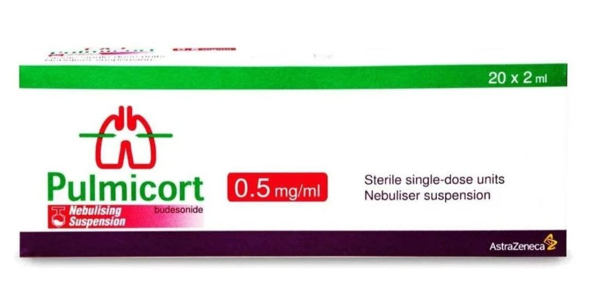
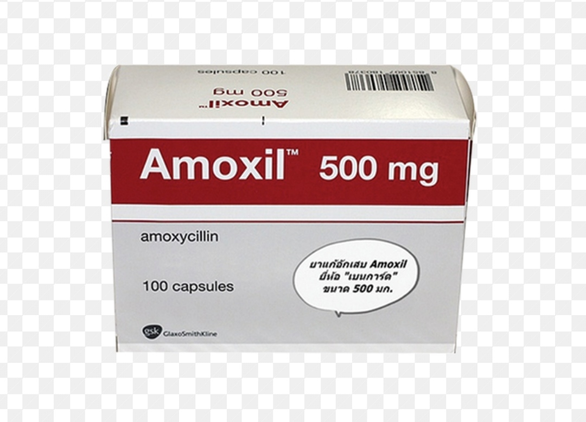

مرض التهاب الشعب الهوائية

التهاب الشعب الهوائية: هو حالة تحدث عندما تصاب الشعب الهوائية في الرئتين بالتهاب. يمكن أن يكون التهاب الشعب
الهوائية
حادًا (مؤقتًا) أو مزمنًا (مستمرًا).
الأسباب:
1.
التهاب الشعب الهوائية الحاد:
العدوى الفيروسية: في الغالب يحدث نتيجة للعدوى الفيروسية مثل الفيروسات المسببة لنزلات البرد أو الإنفلونزا.
العدوى البكتيرية: في بعض الأحيان يمكن أن يحدث بسبب عدوى بكتيرية، خصوصًا بعد الإصابة بفيروس.
التهيج الناتج عن التدخين: التدخين هو السبب الرئيسي للعديد من حالات التهاب الشعب الهوائية المزمن.
التعرض للمواد الملوثة: مثل الغبار والمواد الكيميائية والأبخرة السامة.
التهاب الشعب الهوائية المزمن:
التدخين: يعتبر التدخين العامل الرئيسي المسبب للتهاب الشعب الهوائية المزمن.
التعرض المستمر للمواد المهيجة: مثل الغازات الضارة، والغبار، والمواد الكيميائية.
العدوى المتكررة: قد تؤدي العدوى المستمرة إلى حدوث التهاب الشعب الهوائية المزمن.
الأعراض:
-
السعال: قد يكون السعال جافًا في البداية أو مع إفرازات مخاطية، خاصة في التهاب الشعب الهوائية الحاد.
-
الإفرازات المخاطية: قد يترافق السعال مع بلغم أو مخاط ملون.
-
ضيق التنفس: الشعور بصعوبة في التنفس أو التنفس السريع.
-
ألم في الصدر: شعور بالألم أو الضغط في منطقة الصدر بسبب السعال المستمر.
-
الحمى: في الحالات الحادة، قد يعاني المريض من حمى خفيفة.
-
الشعور بالتعب: يشعر الشخص المصاب بالإرهاق بسبب السعال المستمر وصعوبة التنفس.
-
الصفير عند التنفس: قد يصدر صوت صفير أثناء التنفس نتيجة لانسداد الشعب الهوائية.
العلاج:
التهاب الشعب الهوائية الحاد:
العلاج الداعم: يشمل الراحة والراحة الصوتية وتجنب الملوثات مثل التدخين.
مسكنات الألم: مثل الباراسيتامول أو الأيبوبروفين لتخفيف الألم والحمى.
مضادات السعال: إذا كان السعال مزعجًا، قد يوصي الطبيب باستخدام أدوية لتقليل السعال.
مضادات الفيروسات أو المضادات الحيوية: في حال وجود عدوى بكتيرية قد يصف الطبيب المضادات الحيوية، ولكن العدوى
الفيروسية لا
تتطلب علاجًا بمضادات حيوية.
التهاب الشعب الهوائية المزمن:
الإقلاع عن التدخين: يعتبر هذا الخطوة الأكثر أهمية لعلاج التهاب الشعب الهوائية المزمن.
الأدوية الموسعة للشعب الهوائية: مثل الأدوية التي تحتوي على البيتا 2 (مثل السالبيوتامول) لتوسيع الشعب الهوائية.
الأدوية الستيرويدية: أدوية مضادة للالتهاب يمكن أن تساعد في تقليل الالتهاب في الشعب الهوائية.
العلاج بالأوكسجين: في الحالات المتقدمة قد يكون من الضروري استخدام الأوكسجين لدعم التنفس.
إعادة التأهيل التنفسي: تمارين للمساعدة في تحسين القدرة التنفسية.
نصائح إضافية:
1.
تجنب التدخين والابتعاد عن المدخنين.
2.
الابتعاد عن الملوثات البيئية مثل الغبار والمواد الكيميائية.
3.
الحفاظ على الترطيب الجيد لشعاب التنفس بتناول السوائل الدافئة.
4.
إذا كنت تعاني من أعراض التهاب الشعب الهوائية أو إذا استمرت الأعراض لفترة طويلة، من الأفضل استشارة الطبيب للحصول
على
تشخيص دقيق وعلاج مناسب.
إليك بعض الأدوية الشائعة المستخدمة في علاج التهاب الشعب الهوائية، مع أسماءها التجارية:
1. الأدوية الموسعة للشعب الهوائية (Bronchodilators):
الاسم : سالبيوتامول (Salbutamol)
الاسم التجاري:[ Ventolin، Proventil]
الاستخدام: يستخدم لتوسيع الشعب الهوائية وتسهيل التنفس في حالات التهاب الشعب الهوائية الحاد والمزمن.
المصدر الطبي: Mayo Clinic
mayo clinic
.jpg)
2. الأدوية الستيرويدية (Corticosteroids):
الاسم : بريدنيزون (Prednisone)
الاسم التجاري: Deltasone، Rayos
الاستخدام: يستخدم لتقليل الالتهاب في الشعب الهوائية وتحسين التنفس.
المصدر الطبي: Mayo Clinic
mayo Clinic
 الاسم : بوديزونيد (Budesonide)
الاسم : بوديزونيد (Budesonide)
الاسم التجاري: Pulmicort
الاستخدام: دواء مضاد للالتهاب يستخدم بشكل رئيسي لعلاج التهاب الشعب الهوائية المزمن.
المصدر الطبي: WebMD
WebMD

3. المسكنات (Pain Relievers):
الاسم : باراسيتامول (Paracetamol)
الاسم التجاري: Tylenol، Panadol
الاستخدام: لتخفيف الألم والحمى المصاحبة للالتهاب.
المصدر الطبي: WebMD
WebMD

4. مضادات السعال (Cough Suppressants):
الاسم : ديكستروميثورفان (Dextromethorphan)
الاسم التجاري: Robitussin DM، Delsym
الاستخدام: لتخفيف السعال المزعج المصاحب للعدوى التنفسية.
المصدر الطبي: Mayo Clinic
mayo clinic

5. المضادات الحيوية (في حال العدوى البكتيرية):
الاسم : أموكسيسيلين (Amoxicillin)
الاسم التجاري: Amoxil، Trimox
الاستخدام: يستخدم في حالة وجود عدوى بكتيرية مصاحبة للالتهاب الرئوي أو التهاب الشعب الهوائية.
المصدر الطبي: Mayo Clinic
mayo clinic

6. الأدوية المخففة للمخاط (Expectorants):
الاسم : غايفينيسين (Guaifenesin)
الاسم التجاري: Mucinex، Robitussin Chest Congestion
الاستخدام: يساعد في تخفيف المخاط لتسهيل التخلص منه عن طريق السعال.
المصدر الطبي: WebMD
WebMD

ملاحظة:
هذه الأدوية تتطلب وصفة طبية في بعض الحالات، لذا من المهم استشارة الطبيب قبل استخدامها لضمان العلاج الأنسب
لحالتك.
إليك بعض الأطعمة التي يمكن أن تساعد في التخفيف من أعراض التهاب الشعب الهوائية وتعزيز الشفاء، بالإضافة إلى
الأطعمة التي
يُنصح بتجنبها:
الأطعمة المناسبة:
-
الأطعمة الغنية بفيتامين C:
الأمثلة: البرتقال، الليمون، الفراولة، الكيوي، الفلفل الأحمر.
الفائدة:
( C فيتامين )
يساعد في تقوية جهاز المناعة ويعزز من قدرة الجسم على محاربة الالتهابات.
-
الأطعمة الغنية بالأحماض الدهنية أوميغا 3:
الأمثلة: السمك الدهني مثل السلمون، التونة، السردين، بذور الكتان، المكسرات.
الفائدة: أوميغا 3 تساعد في تقليل الالتهابات وتحسين وظائف الرئتين.
-
العسل:
الفائدة: العسل يعد مسكنًا طبيعيًا للسعال ويعزز الشفاء من التهاب الحلق والشعب الهوائية.
الاستخدام: يمكن تناوله بمفرده أو إضافته إلى المشروبات الدافئة مثل الشاي.
-
الثوم:
الفائدة: يحتوي الثوم على خصائص مضادة للبكتيريا والفيروسات، ويمكن أن يساعد في مكافحة العدوى التي تؤثر على
الجهاز التنفسي.
-
الزنجبيل:
الفائدة: الزنجبيل له خصائص مضادة للالتهابات ويعزز من تدفق الدم في الجسم